weekly AI awards 🏆
even better than whisper
: @OpenAI launches new audio models
most surreal comeback
: @elevenlabsio brings Dalí's voice back with AI magic
and more...
Use
◀
and
▶
keys to navigate through slides.
Click on any link/image to access the source.
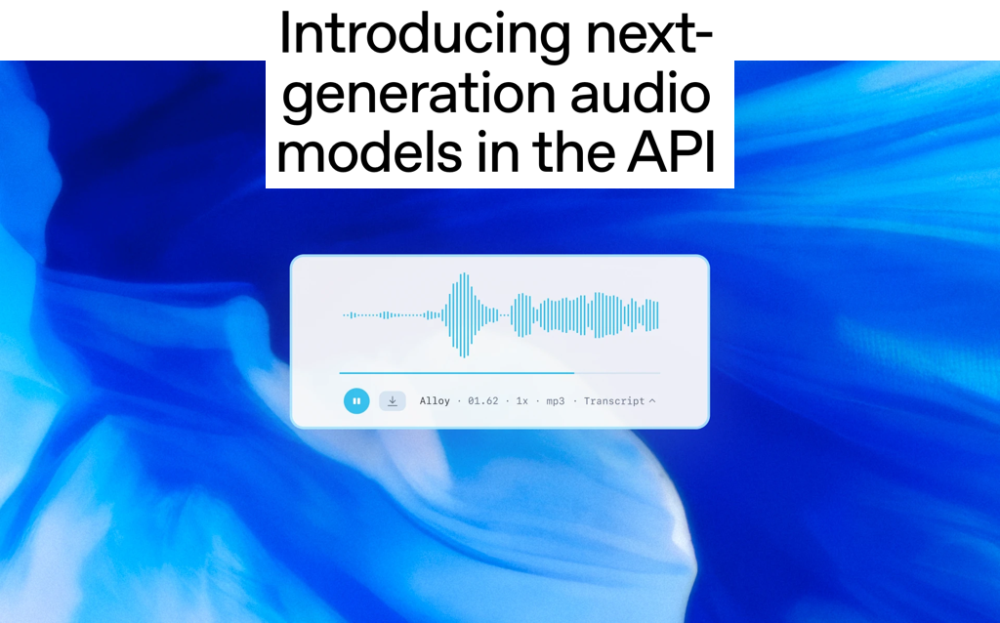
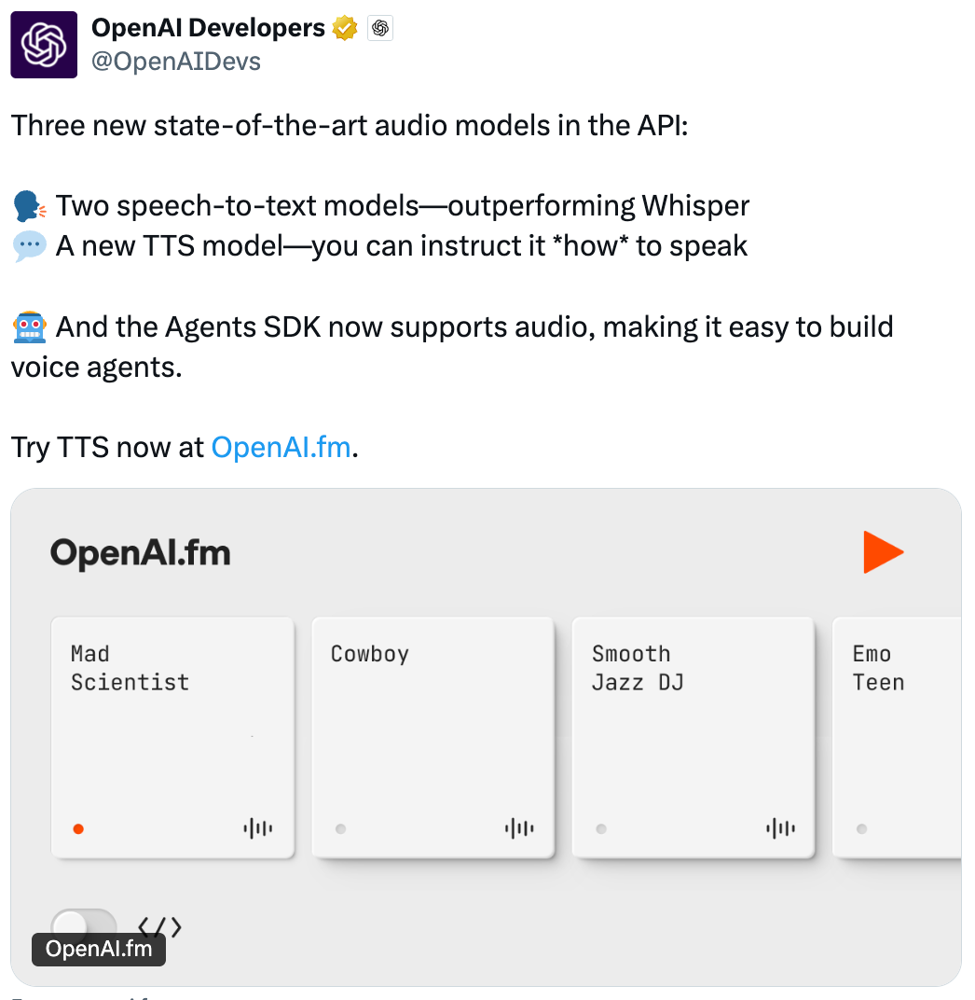
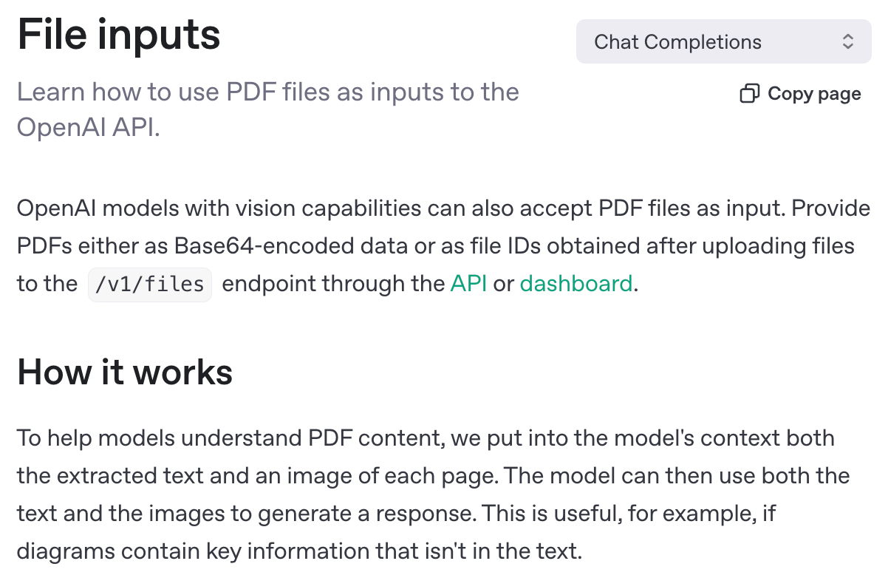
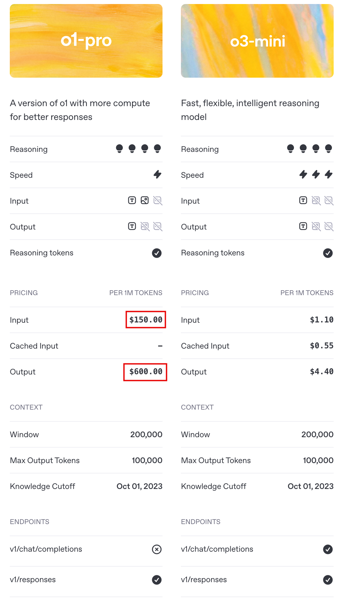
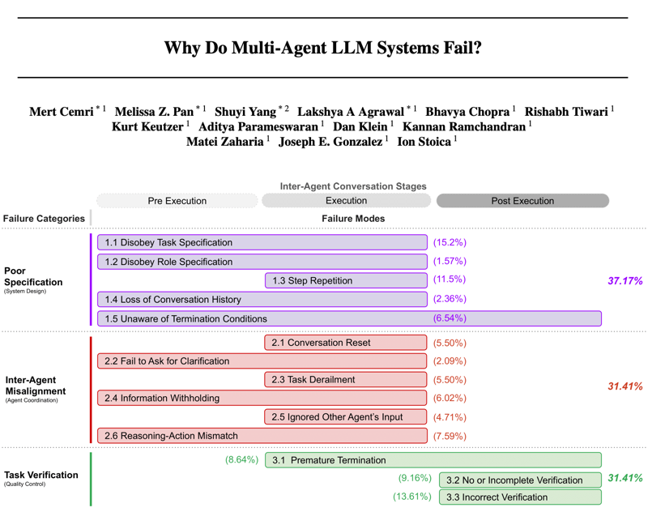
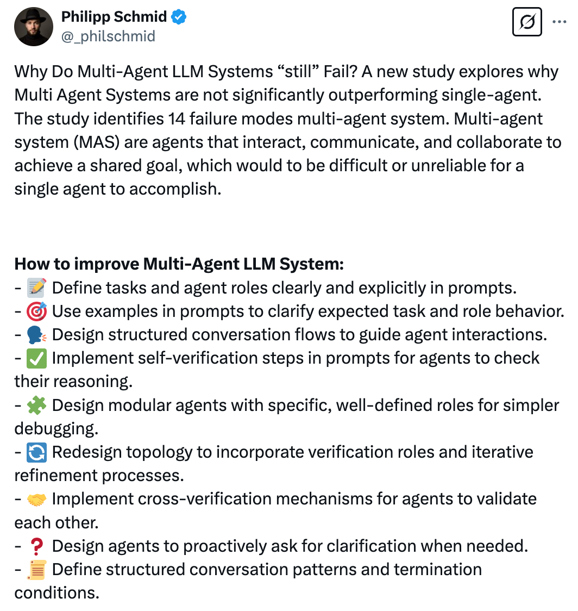
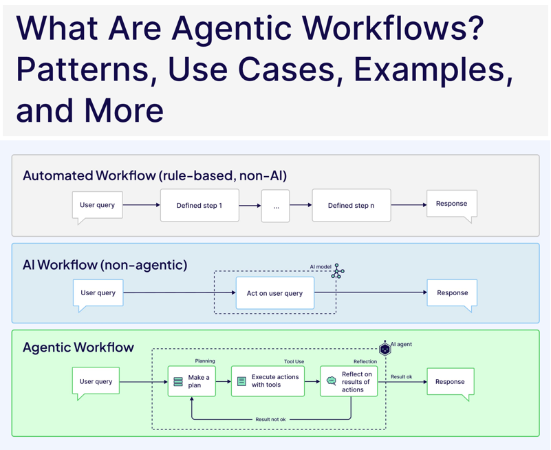
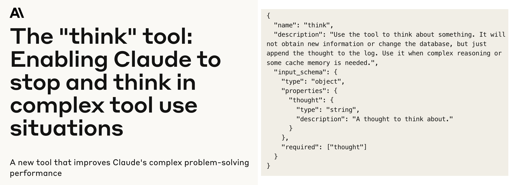
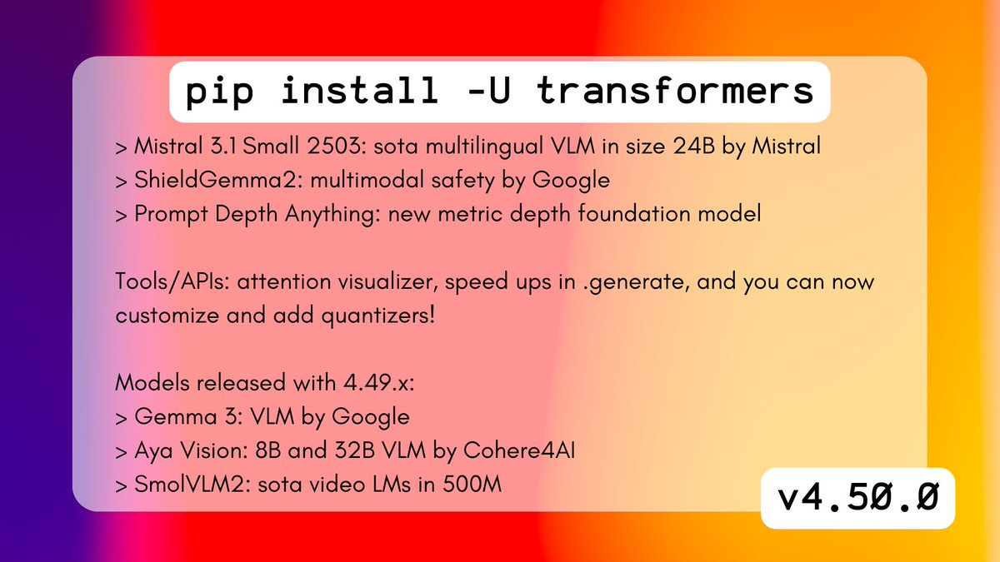
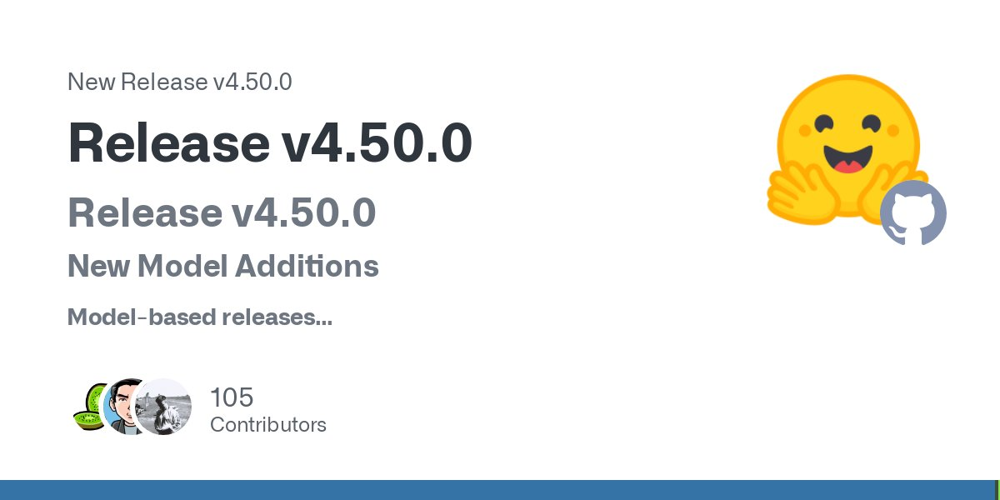
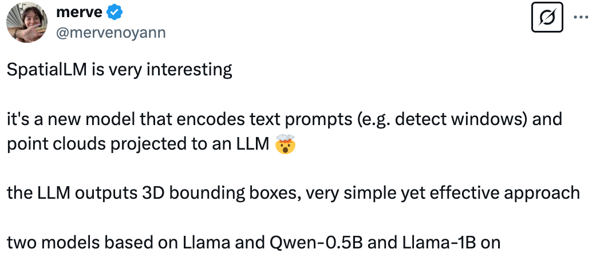
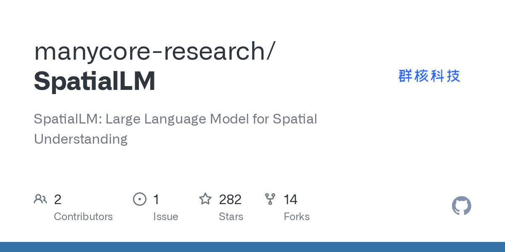
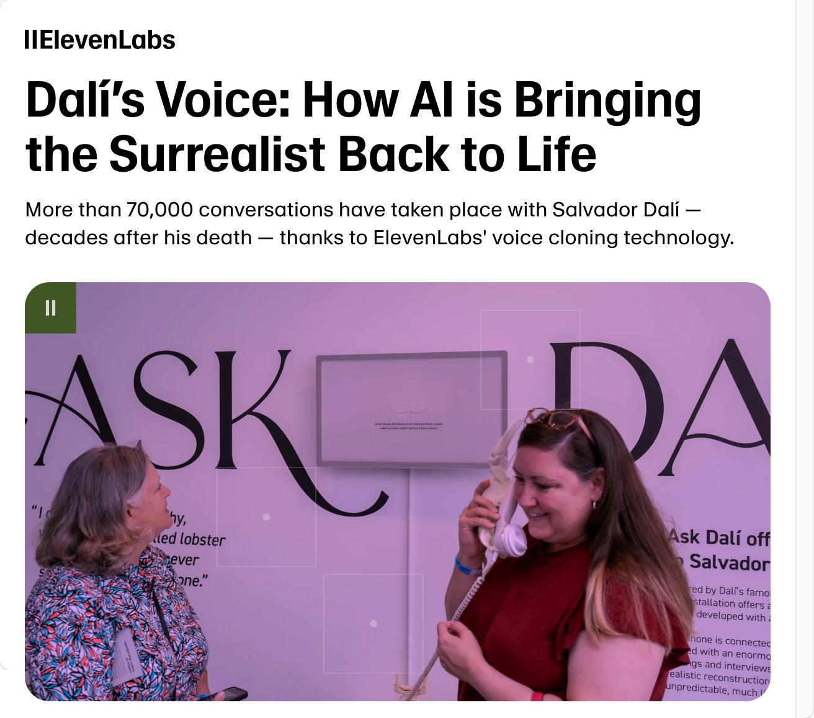